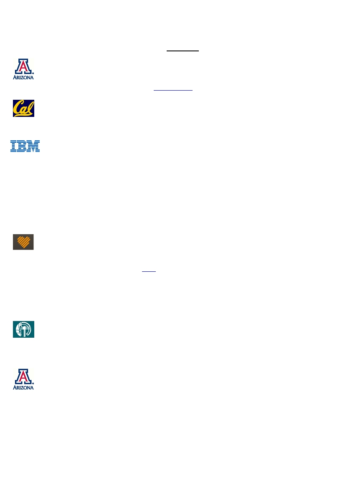

Timothy Melano, PhD
EDUCATION
BIOMEDICAL ENGINEERING PROGRAM, UNIVERSITY OF ARIZONA
Doctor of Philosophy, 2011
Doctoral research on Insect-Robot Interface publicity: featured in Los Angeles Times (circulation >
700,000) and New Scientist (watch Cyborg Insects YouTube video, views > 1.8 million)
UNIVERSITY OF CALIFORNIA AT BERKELEY
Bachelor of Science in Mechanical Engineering, 2001
EXPERIENCE
IBM Research: Brain Inspired Computing Group (San Jose, CA), March 2014 – Present
Research Scientist (Neuromorphic Hardware, Deep Learning, Python, C, C++, Matlab)
Led a team of Research Staff Members to achieve state of the art performance on GTSRB (a
benchmark dataset) using convolutional networks on TrueNorth
Led and developed the curriculum for the 2016 Bootcamp Reunion which had over 70 attendees
from universities and government labs
Developed, tested and released code to the community of TrueNorth Developers
Initiated and managed a successful and resourceful online forum for TrueNorth developers
Developed a real-time (1000 classifications per second) gesture recognition system with TrueNorth
and a neuromorphic camera, the Dynamic Vision Sensor from Ini Labs, Zurich
Currently developing a real-time pedestrian detection system on TrueNorth
BASIS SCIENCE (SAN FRANCISCO, CA), April 2012 – September 2013
Biosignal Algorithms Engineer (Python, Machine Learning)
High-impact contributor to the launching of the Basis Band, the most advanced health-tracking
device that leverages five sensors to help people easily incorporate healthy habits into their daily
routines (see Popular Science, CNET)
Major contributor to the Calories, Activity Classification and Steps metrics displayed on the Basis
Band
Patents filed for a heart rate related metric and an activity classification algorithm
Manager of the internal biosignals database that uses the NoSQL framework, PyMongo/MongoDB
Basis Science was bought by Intel for $100M
MAX PLANCK INSTITUTE FOR BIOLOGICAL CYBERNETICS (TUEBINGEN, GERMANY), June 2009 – June 2011
Research Associate
Technical lead in the group Cholinergic Mechanisms of Learning and Cognition
Investigated primate brain mechanisms that underlie acetylcholine release using pharmacology,
fMRI, electrophysiology, machine learning, and signals processing
UNIVERSITY OF ARIZONA, NEUROMORPHIC ENGINEERING AND ROBOTICS LABORATORY (TUCSON, AZ),
August 2002 – May 2009
Research Assistant
Computationally replicated pharmacological manipulations of a neuronal model in the fly brain that
underlie visual motion detection
Designed, built and successfully tested world’s first insect-brain controlled robot; the robot was built
from custom designed analog circuits, micro-controllers and computer code in C
PUBLICATIONS
A Amir, B Taba, D Berg, T Melano , J McKinstry, C Di Nolfo, T Nayak, A Andreopoulos, G Garreau, M
Mendoza, J Kusnitz, M Debole, S Esser, T Delbruck, M Flickner, D Modha. “A Low Power, Fully Event-
Based Gesture Recognition System,” (To appear in CVPR 2017)
R Appuswamy, TK Nayak, JA Arthur, SK Esser, PA Merolla, JL McKinstry, T Melano , MD Flickner, DS
Modha. “Structured Convolution Matrices for Energy-Efficient Deep Learning,” (June 2016)
arXiv:1606.02407
SK Esser, PA Merolla, JV Arthur, AS Cassidy, R Appuswamy, A Andreopoulos, DJ Berg, JL McKinstry , T
Melano , DR Barch, C di Nolfo, P Datta, A Amir, B Taba, MD Flickner, DS Modha. “Convolutional Networks
for Fast, Energy-Efficient Neuromorphic Computing,” PNAS (2016) 113:41, 11441-11446
T Melano . “Insect-Machine Interfacing.” Doctoral Dissertation , ARL Division of Biomedical Engineering,
University of Arizona, Tucson, AZ, 2011.
T Melano , CH Higgins. “The neuronal basis of direction selectivity in lobula plate tangential cells.”
Neurocomputing 65 (2005): 153-159.
SKILLS
Coding: Python, Matlab, C/C++, Bash,
Machine Learning: Convolutional Networks, PCA, ICA, Logistic Regression, Linear Regression, SVM,
Clustering
Unix/Linux: creating DHCP servers, configuring NFS drives, cloning/resizing disks, custom network
settings
LEADERSHIP AND VOLUNTEERING
2016 Member of Northern California ARCS Scholar Alumni Leadership Council
2004 President and Founder, 2005 President, 2006 Advisor; Latino/a Association of Graduate Students in
Engineering and Science, Student Chapter, University of Arizona
2006 Key Note Speaker; Committee Luncheon, Achievement Rewards for College Scientists, Phoenix
Arizona Chapter
2007 Member of the Executive Committee of the Pastoral Council; The St. Thomas More Catholic
Newman Center, University of Arizona
2007 Planetarium Operator; The Flandrau Science Center, University of Arizona
AWARDS
Misha Mahowald Prize for Neuromorphic Engineering (March 2016)
Recognized as an Outstanding Graduate Student by U of A President, Board of Regents (January 2008)
Achievement Rewards for College Scientists Foundation award and $19,500 prize (eligibility: top 2% grad
students; August 2004)
National Science Foundation IGERT Fellowship (merit base; $27,000 stipend; August 2003)
Frank Jarrett Most Outstanding Mechanical Engineering Design; earned most student votes for “best
machine design” and $200 cash award (December 2001)